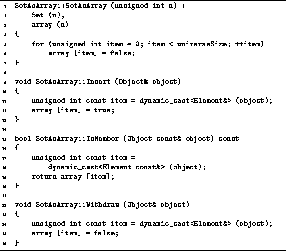

Data Structures and Algorithms
with Object-Oriented Design Patterns in C++
Data Structures and Algorithms
with Object-Oriented Design Patterns in C++
Program  defines the constructor for the SetAsArray
class as well as the three basic operations--Insert, IsMember, and Withdraw.
The constructor takes a single argument
defines the constructor for the SetAsArray
class as well as the three basic operations--Insert, IsMember, and Withdraw.
The constructor takes a single argument
 ,
which defines the universe and, consequently,
the size of the array of Boolean values.
The constructor creates the empty set by initializing
all the element of the Boolean array to false.
Clearly, the running time of the constructor is O(N).
,
which defines the universe and, consequently,
the size of the array of Boolean values.
The constructor creates the empty set by initializing
all the element of the Boolean array to false.
Clearly, the running time of the constructor is O(N).

Program: SetAsArray Class Constructor, Insert, Withdraw and IsMember Member Function Definitions
The Insert function is used to put an item into the set. The function takes a reference to an Object instance which is assumed to be a Set::Element. A dynamic cast is used to ensure that the object to be inserted is of the correct type and to extract the integer value from that object. Then the corresponding element of array is set to true to indicate that the specified object has been added to the set. Note that the set does not keep track of the actual object instance that was inserted. Therefore, the set cannot own contained objects. Instead, objects that are inserted are represented implicitly by array indices. The running time of the Insert operation is O(1).
The IsMember function is used to test whether a given item is an element of the set. The semantics are somewhat subtle. Since a set does not actually keep track of the specific object instances that are inserted, the membership test is based on the value of the argument. Again, a dynamic cast is used to ensure that the argument is of the correct type and to extract the integer value from that object. The function simply returns the value of the appropriate element of the array. The running time of the IsMember operation is O(1).
The Withdraw member function is used to take an item out of a set. The withdrawal operation is the opposite of insertion. Instead of setting the appropriate array element to true, it is set to false. The running time of the Withdraw is identical to that of Insert, viz., is O(1).
 Copyright © 1997 by Bruno R. Preiss, P.Eng. All rights reserved.
Copyright © 1997 by Bruno R. Preiss, P.Eng. All rights reserved.